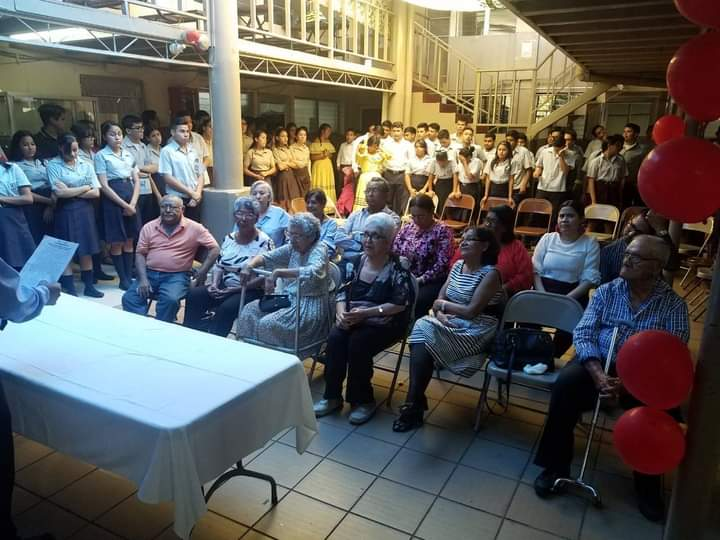

La educación comenzó cuando los adultos entrenaban a los jóvenes en el conocimiento y habilidades consideradas necesarias en su sociedad. En las sociedades pre-alfabéticas esto se ha logrado tradicionalmente por vía oral, y por medio de la imitación, tal como los estudios antropológicos sugieren. La narración de historias pasaron conocimientos, valores y habilidades de una generación a la siguiente. A medida que las culturas empezaron a extender su conocimiento más allá de las habilidades que se podían aprender fácilmente a través de la imitación, se fue desarrollando la educación formal.
Por su parte, en Egipto, en la época del Imperio Medio, existían escuelas. Platón fundó la Academia de Atenas, la primera institución de educación superior en Europa. La ciudad de Alejandría, en Egipto, fundada en 330 a. C., se convirtió en la sucesora de Atenas como la cuna intelectual de la antigua Grecia. Allí, el matemático Euclides y el anatomista Herophilos construyó la gran Biblioteca de Alejandría y tradujo la Biblia hebrea al griego. Las civilizaciones europeas sufrieron un colapso de alfabetización y de la organización después de la caída de Roma en el año 476.
La educación es un proceso de socialización y endoculturación de las personas, a través del cual se desarrollan capacidades físicas e intelectuales, habilidades, destrezas, técnicas de estudio y formas de comportamiento ordenadas con un fin social (valores, moderación del diálogo-debate, jerarquía, trabajo en equipo, regulación fisiológica, cuidado de la imagen, etc.).
Pero el término educación se refiere sobre todo a la influencia ordenada ejercida sobre una persona para formarla y desarrollarla a varios niveles complementarios; en la mayoría de las culturas es la acción ejercida por la generación adulta sobre la joven para transmitir y conservar su existencia colectiva. Es un ingrediente fundamental en la vida del ser humano y la sociedad y se remonta a los orígenes mismos del ser humano. La educación es lo que transmite la cultura, permitiendo su evolución.
Existen tres tipos o formas de educación: la formal, la no formal y la informal.
La educación formal: hace referencia a los ámbitos de las escuelas, institutos, universidades, módulos donde se reconoce la participación por medio de certificados de estudios.
La educación no formal: se refiere a los cursos, academias, e instituciones, que no se rigen por un particular currículo de estudios, estos tienen la intención de educar pero no se reconoce por medio de certificados.
La educación informal: es aquella que fundamentalmente se recibe en los ámbitos sociales, pues es la educación que se adquiere progresivamente a lo largo de toda la vida, se da sin ninguna intención educativa.